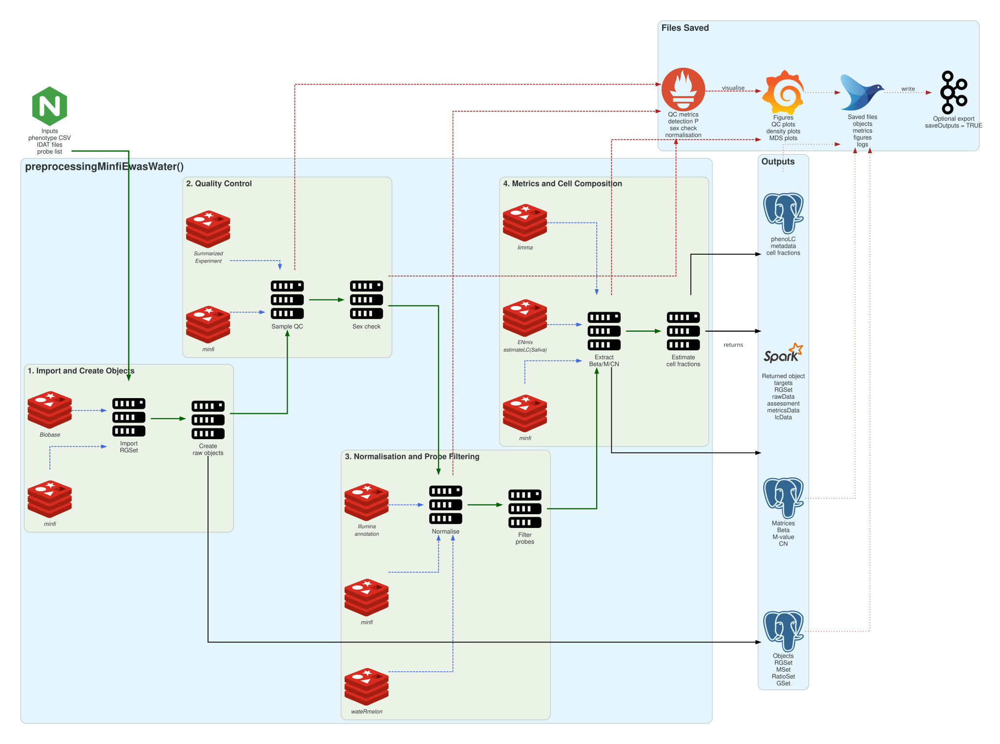
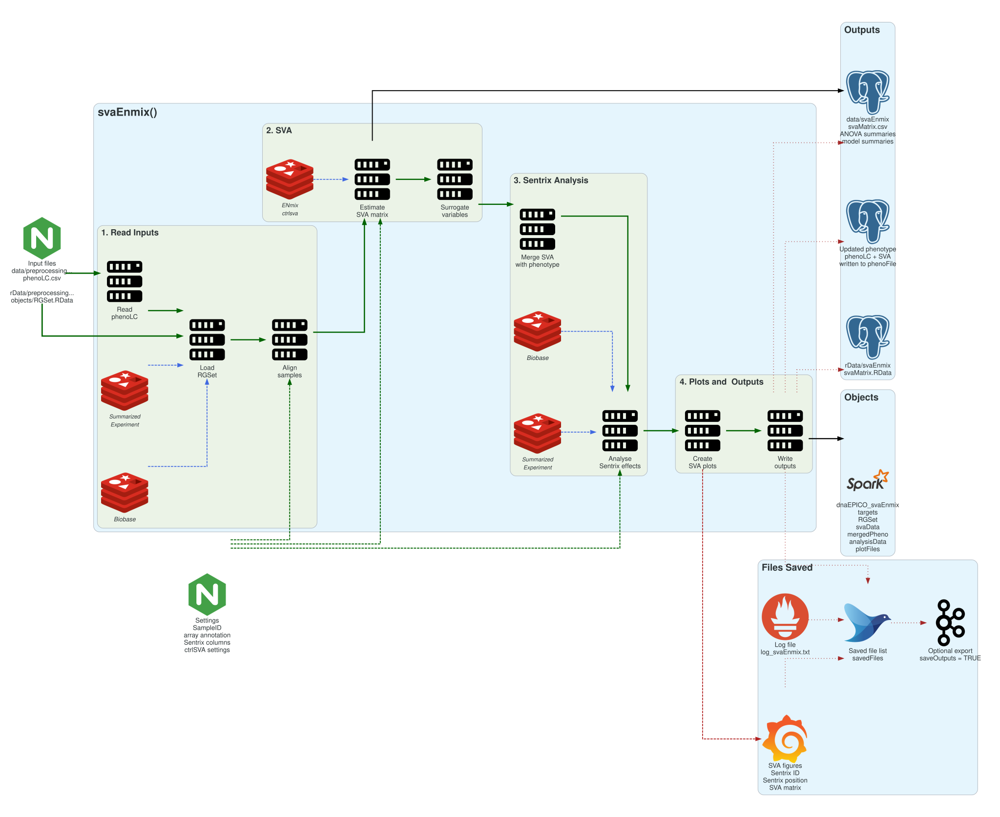
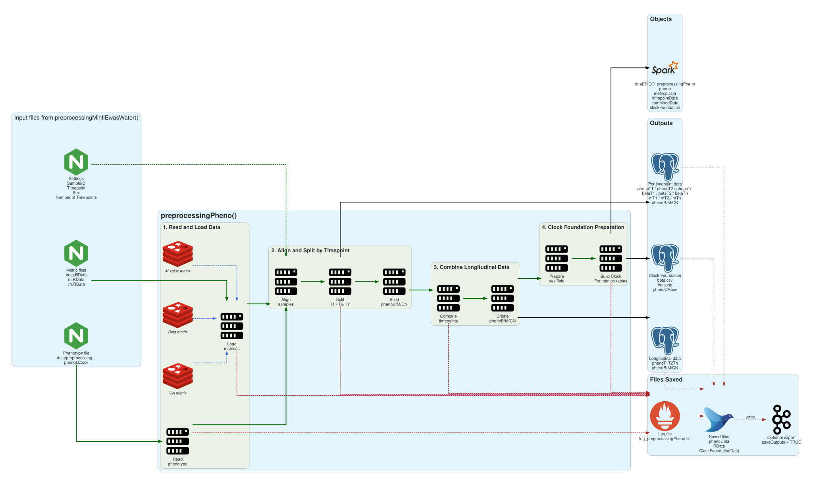
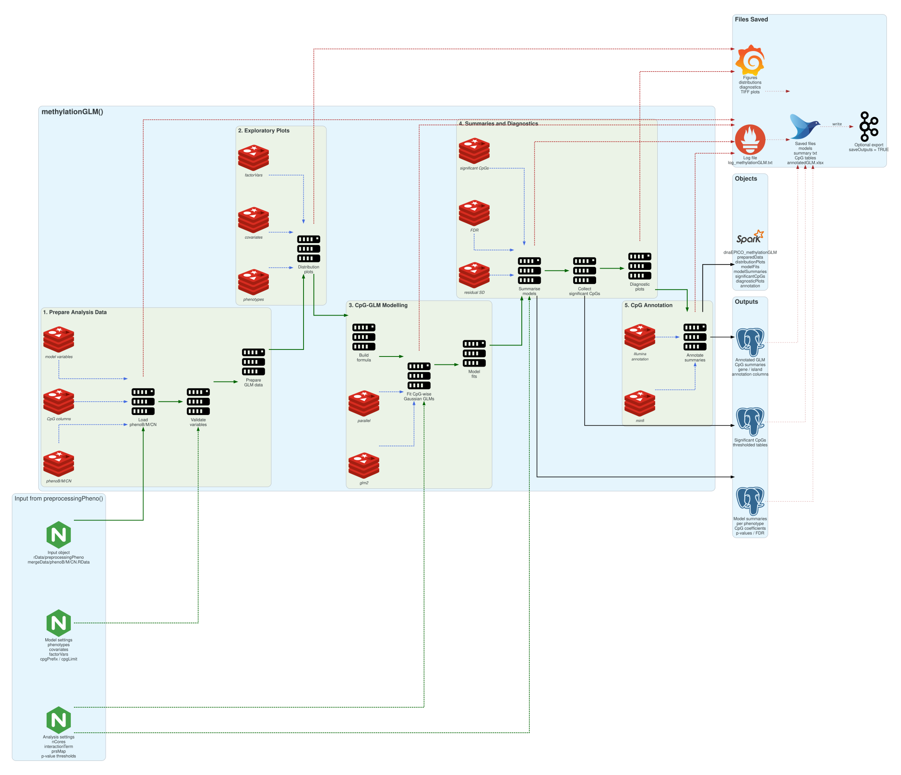
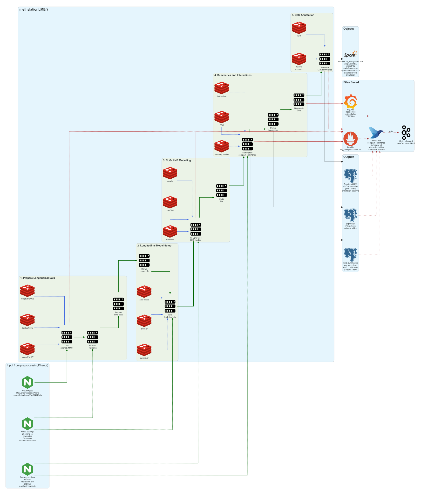
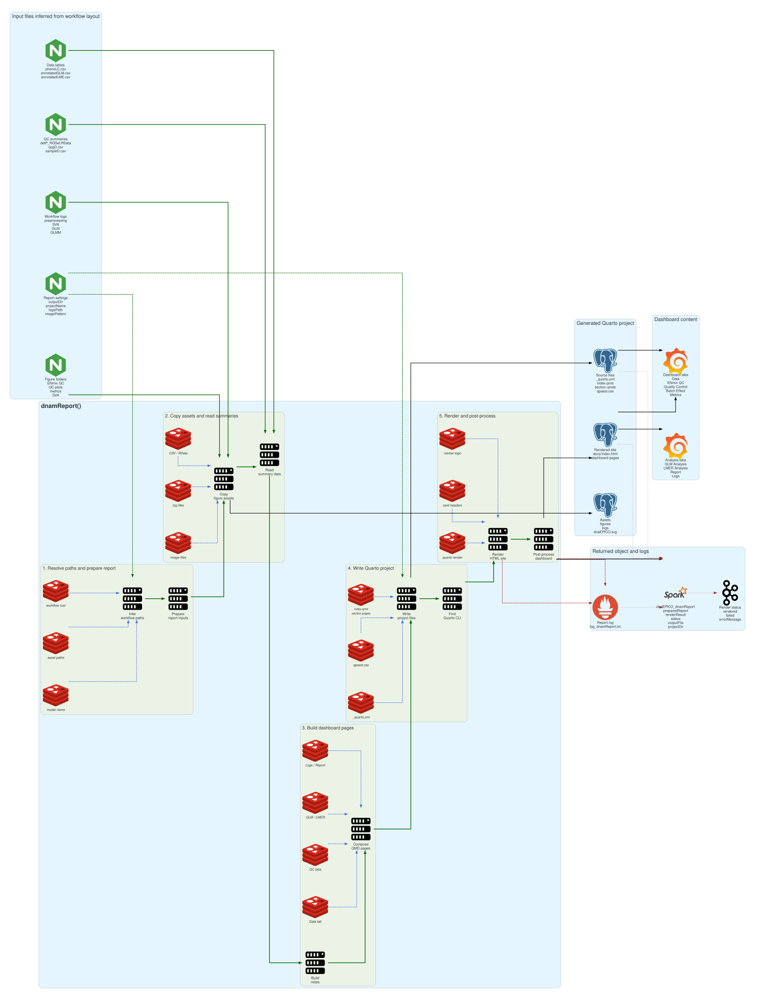

vignettes/dnaEPICO-overview.Rmd
dnaEPICO-overview.RmdThis vignette provides a visual overview of the main dnaEPICO functions roles. It shows how the major functions organise their inputs, internal processing stages, and outputs.
The diagrams are intended as orientation maps. They are useful when deciding which function to run and checking how outputs move between stages. For detailed arguments and executable examples, use the local-use and pipeline-use vignettes.
Read each overview as follows:
saveOutputs.dnaEPICO is built on core Bioconductor infrastructure for high-dimensional genomic data, with a focus on Illumina DNA methylation arrays. To read this vignette, we assume that you are already familiar with the general DNA methylation pipeline. If not, we recommend first reading this tutorial, which provides a practical introduction to the main concepts and analysis steps.
Preprocessing and quality control are performed using established Bioconductor tools, including minfi, ENmix, and wateRmelon. Downstream statistical modelling relies on base R and CRAN frameworks, including generalised linear models and linear mixed-effects models. Users are expected to have basic familiarity with R, Bioconductor pipelines, command-line execution, and Illumina IDAT file structures.
If you are asking yourself the question “Where do I start using Bioconductor?”, you might be interested in this blog post.
The lists of excluded probes depend on the Illumina methylation-array platform.
For Illumina HumanMethylationEPIC v2.0, use the cross-reactive probe-exclusion file from Peters et al. (2024).
For Illumina MethylationEPIC, also known as the 850k array, use the probe-exclusion resources from Pidsley et al. (2016). The supplementary files commonly used together are 13059_2016_1066_MOESM1_ESM.csv, 13059_2016_1066_MOESM4_ESM.csv, 13059_2016_1066_MOESM5_ESM.csv, and 13059_2016_1066_MOESM6_ESM.csv.
For Illumina HumanMethylation450k, use the cross-reactive and polymorphic probe resources from Chen et al. (2013).
Multiple probe-exclusion files can be supplied as a
semicolon-separated value in probeExclusionPath.
dnaEPICO reads probe IDs from each file, uses
probeExclusionIdColumn when supplied, or otherwise
auto-detects common probe-ID columns such as ProbeID,
TargetID, IlmnID, and Name. The
unique union of all probe IDs is then used to filter the normalised
object.
For EPICv2, setting
useEpicV2Manifest = TRUE also retrieves the expanded Peters
et al. manifest from AnnotationHub resource AH116484.
Probes flagged in selected manifest columns are added to the same
exclusion set. By default, probes flagged by
CH_WGBS_evidence, CH_BLAT, or
MissingPos are removed, while MismatchPos is
retained unless explicitly enabled.
The sections below describe the role of each main function in the package dnaEPICO. They are ordered according to the analysis path: preprocessing, surrogate-variable estimation, phenotype preparation, cross-sectional modelling, longitudinal modelling, and report generation.
preprocessingMinfiEwasWater() reads the phenotype table
and IDAT files, builds the methylation objects, performs quality control
and normalisation, filters probes, and estimates cell composition.
Its role in the package is to create analysis-ready methylation data:
removeSexMismatch = TRUE, samples are removed only when
both reported and predicted sex are available and disagree; samples with
missing or unknown sex information remain because their mismatch status
cannot be determined.RGSet, beta values,
M-values, copy-number values, quality-control figures, and
phenoLC. The log reports the observed finite minimum and
maximum for each methylation matrix without modifying its values.100%

svaEnmix() estimates surrogate variables from
control-probe information and adds them to the phenotype table. This
step helps represent technical variation that may otherwise influence
downstream association models.
Its role is to prepare covariates for batch and technical adjustment:
RGSet.100%

preprocessingPheno() aligns phenotype information with
methylation metrics. It prepares timepoint-specific data, combines
longitudinal records, and creates export-ready files for external
methylation-age tools.
Its role is to organise samples and methylation matrices for modelling:
100%

methylationGLM() fits cross-sectional methylation
association models. It is designed for analyses where one phenotype is
tested against CpG-level methylation while adjusting for selected
covariates.
Its role is to run single-timepoint association testing:
<Phenotype>_Model.Message; CpGs without
a returned p-value remain in serialized model records and are counted in
workbook metadata.100%

methylationLME() fits longitudinal mixed-effects models.
It supports repeated-measures designs with a participant-level random
intercept and timepoint-related fixed effects. For lmerTest/lme4 models,
an optional omnibus F test jointly evaluates all estimable coefficients
for a phenotype main effect or phenotype-by-interaction term.
Its role is to model methylation change across repeated observations:
<Phenotype>_Model.Message; CpGs without a returned
coefficient or omnibus p-value remain in serialized model records and
are counted in workbook metadata.100%

dnamReport() assembles the main tables, figures, logs,
and model summaries into a report website. It can be run after
preprocessing and modelling outputs have been written to disk.
Its role is to make the package outputs easier to inspect and share:
100%

The preprocessing function create quality-controlled methylation data and analysis-ready phenotype tables. The modelling functions fit cross-sectional and longitudinal association models. The report function gathers the resulting tables, figures, and logs into a browsable output.
In practice, the main functions are:
preprocessingMinfiEwasWater() to prepare
methylation objects and QC outputs,svaEnmix() when control-probe surrogate variables
are needed,preprocessingPheno() to prepare modelling
tables,methylationGLM() or methylationLME()
for association testing, anddnamReport() to review the completed outputs.Date the vignette was generated.
#> [1] "2026-07-23 01:47:47 UTC"Wallclock time spent generating the vignette.
#> Time difference of 0.631 secsR session information.
#> R version 4.4.2 (2024-10-31)
#> Platform: x86_64-pc-linux-gnu
#> Running under: Ubuntu 24.04.1 LTS
#>
#> Matrix products: default
#> BLAS: /usr/lib/x86_64-linux-gnu/openblas-pthread/libblas.so.3
#> LAPACK: /usr/lib/x86_64-linux-gnu/openblas-pthread/libopenblasp-r0.3.26.so; LAPACK version 3.12.0
#>
#> locale:
#> [1] LC_CTYPE=en_US.UTF-8 LC_NUMERIC=C
#> [3] LC_TIME=en_US.UTF-8 LC_COLLATE=en_US.UTF-8
#> [5] LC_MONETARY=en_US.UTF-8 LC_MESSAGES=en_US.UTF-8
#> [7] LC_PAPER=en_US.UTF-8 LC_NAME=C
#> [9] LC_ADDRESS=C LC_TELEPHONE=C
#> [11] LC_MEASUREMENT=en_US.UTF-8 LC_IDENTIFICATION=C
#>
#> time zone: UTC
#> tzcode source: system (glibc)
#>
#> attached base packages:
#> [1] stats graphics grDevices utils datasets methods base
#>
#> other attached packages:
#> [1] dnaEPICO_0.99.35 BiocStyle_2.34.0
#>
#> loaded via a namespace (and not attached):
#> [1] cli_3.6.6 knitr_1.51 rlang_1.3.0
#> [4] xfun_0.60 otel_0.2.0 textshaping_1.0.5
#> [7] jsonlite_2.0.0 htmltools_0.5.9 ragg_1.5.2
#> [10] sass_0.4.10 rmarkdown_2.31 evaluate_1.0.5
#> [13] jquerylib_0.1.4 fastmap_1.2.0 yaml_2.3.12
#> [16] lifecycle_1.0.5 bookdown_0.47 BiocManager_1.30.27
#> [19] compiler_4.4.2 fs_2.1.0 htmlwidgets_1.6.4
#> [22] systemfonts_1.3.2 digest_0.6.39 R6_2.6.1
#> [25] bslib_0.11.0 tools_4.4.2 pkgdown_2.2.1
#> [28] cachem_1.1.0 desc_1.4.3As package developers, we try to explain clearly how to use our
packages and in which order to use the functions. But R and
Bioconductor have a steep learning curve, so it is critical
to learn where to ask for help. We would like to highlight the Bioconductor support site
as the main resource for getting help. Please remember to use the
dnaEPICO tag and check the older posts.
If you want to receive help, please provide a small reproducible example
and your session information so the source of the problem can be tracked
efficiently.